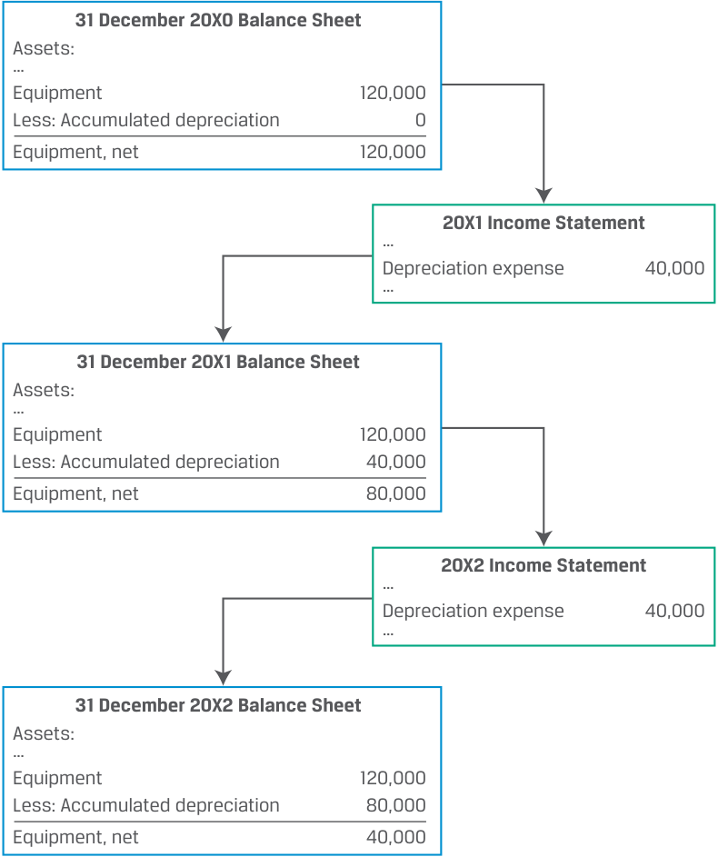

Learning Module 5 Capital Investments and Capital Allocation - Part 1: Introduction
Volume 3: Corporate Issuers
Learning Module 5 Capital Investments and Capital Allocation
Part 1/3: Introduction (PDF Pages 143–153)
Tập 3: Tổ chức phát hành doanh nghiệp (Corporate Issuers)
Học phần 5: Đầu tư vốn và Phân bổ vốn (Capital Investments and Capital Allocation)
Phần 1/3: Giới thiệu và Đầu tư vốn (PDF Trang 143–153)
L E A R N I N G M O D U L E
H Ọ C P H Ầ N
5
5
Capital Investments and Capital Allocation
Đầu tư vốn và Phân bổ vốn (Capital Investments and Capital Allocation)
LEARNING OUTCOMES
KẾT QUẢ HỌC TẬP (LEARNING OUTCOMES)
Mastery The candidate should be able to: describe types of capital investments describe the capital allocation process, calculate net present value (NPV), internal rate of return (IRR), and return on invested capital (ROIC), and contrast their use in capital allocation describe principles of capital allocation and common capital allocation pitfalls describe types of real options relevant to capital investments
| Mức độ thành thạo | Ứng viên cần có khả năng: |
|---|---|
| mô tả các loại hình đầu tư vốn (capital investments) | |
| mô tả quy trình phân bổ vốn (capital allocation process), tính toán giá trị hiện tại ròng (net present value – NPV), tỷ suất hoàn vốn nội bộ (internal rate of return – IRR), và tỷ suất sinh lợi trên vốn đầu tư (return on invested capital – ROIC), đồng thời đối chiếu việc sử dụng chúng trong phân bổ vốn | |
| mô tả các nguyên tắc phân bổ vốn (principles of capital allocation) và những sai lầm phổ biến trong phân bổ vốn (common capital allocation pitfalls) | |
| mô tả các loại quyền chọn thực (real options) liên quan đến đầu tư vốn |
INTRODUCTION
GIỚI THIỆU (INTRODUCTION)
1
1
The previous learning module described issuers’ short-term investments and financing activities. In this module and the next, we turn our attention to issuers’ long-term investment and financing activities. First, we explore the various forms of capital investment and their purposes. We then discuss the investment decision-making process and compare analytical approaches employed in that process. In the third lesson, we describe principles of capital allocation and common pitfalls. While the goals of both capital allocation and estimating expected investment returns are to select the best choice among investment alternatives, a firm’s decision today may influence future investment decisions, resulting in so-called real options, which are discussed in the final lesson.
Học phần trước đã mô tả các hoạt động đầu tư và tài trợ ngắn hạn của các tổ chức phát hành. Trong học phần này và học phần tiếp theo, chúng ta chuyển sự chú ý sang các hoạt động đầu tư và tài trợ dài hạn của các tổ chức phát hành. Trước tiên, chúng ta khám phá các hình thức đầu tư vốn khác nhau và mục đích của chúng. Sau đó, chúng ta thảo luận về quy trình ra quyết định đầu tư và so sánh các phương pháp phân tích được sử dụng trong quy trình đó. Trong bài học thứ ba, chúng ta mô tả các nguyên tắc phân bổ vốn và những sai lầm phổ biến. Mặc dù mục tiêu của cả việc phân bổ vốn lẫn việc ước tính tỷ suất sinh lợi đầu tư kỳ vọng đều là nhằm chọn ra phương án tốt nhất trong số các lựa chọn đầu tư thay thế, nhưng quyết định của doanh nghiệp ngày hôm nay có thể ảnh hưởng đến các quyết định đầu tư trong tương lai, tạo ra cái gọi là các quyền chọn thực (real options), sẽ được thảo luận trong bài học cuối cùng.
LEARNING MODULE OVERVIEW
TỔNG QUAN HỌC PHẦN (LEARNING MODULE OVERVIEW)
- Companies make capital investments to maintain or expand operations. Capital investments can be grouped into four categories based on their risk and return characteristics: (1) going concern projects, (2) regulatory/compliance projects, (3) expansion projects, and (4) other.
- Các công ty thực hiện đầu tư vốn (capital investments) để duy trì hoặc mở rộng hoạt động kinh doanh. Các khoản đầu tư vốn có thể được chia thành bốn nhóm dựa trên đặc điểm rủi ro và tỷ suất sinh lợi của chúng: (1) các dự án duy trì hoạt động liên tục (going concern projects), (2) các dự án tuân thủ quy định pháp lý (regulatory/compliance projects), (3) các dự án mở rộng (expansion projects), và (4) các dự án khác (other).
-
Capital allocation is a process undertaken by issuers’ management and board for evaluating investment opportunities based on their expected contribution to shareholder value, as well as other considerations, such as environmental, social, and governance (ESG) factors. Although some projects might look profitable on an accounting or standalone basis, they might be uneconomical compared to alternatives or from an overall strategic perspective. Such projects should not be pursued, and capital should instead be returned to shareholders.
-
Net present value (NPV) and internal rate of return (IRR) are two tools used to evaluate individual investment projects. NPV estimates the increase in firm value from a project, while IRR is an estimate of the rate of return on a project, subject to certain assumptions, which can be compared to a hurdle rate.
-
Unlike NPV and IRR, return on invested capital (ROIC) is a company-wide measure and can be calculated using data available to independent analysts. ROIC is the rate of return an issuer earns over a period across all investments and can be compared to an investor’s required rate of return. Like NPV and IRR, ROIC is subject to limitations and assumptions.
-
Before investment projects are appraised on a quantitative basis, they should be modeled in accordance with certain principles, including measurement of cash flows on an after-tax basis, avoiding double counting, and including a project’s impact on the rest of the firm. Impacts can be positive, such as cost savings, or negative, such as the loss of sales from existing products.
-
Apart from deviations from these principles, capital allocation is additionally prone to behavioral biases and cognitive errors. These pitfalls can be detected by a thorough analysis of a company’s financials on a historical and comparative basis, as well as an examination of corporate governance and management renumeration policies.
-
Real options are like financial options in that they provide a right, not an obligation, for management to alter different aspects of capital projects in the future. Those aspects include timing and size of a project, as well as flexibility with regard to future pricing policies or operating capacity.
-
The most common approach to evaluating projects with real options is to compare a project’s NPV before and after inclusion of an option’s value less the option’s cost. More advanced methods include decision trees and option pricing models, which require assumptions about the probability of future events.
-
Phân bổ vốn (capital allocation) là một quy trình được ban giám đốc và hội đồng quản trị của tổ chức phát hành thực hiện nhằm đánh giá các cơ hội đầu tư dựa trên mức đóng góp kỳ vọng của chúng vào giá trị cổ đông (shareholder value), cũng như các cân nhắc khác, chẳng hạn như các yếu tố môi trường, xã hội và quản trị (environmental, social, and governance – ESG). Mặc dù một số dự án có vẻ sinh lời trên cơ sở kế toán hoặc khi xét độc lập, nhưng chúng có thể không mang lại hiệu quả kinh tế khi so sánh với các phương án thay thế hoặc xét từ góc độ chiến lược tổng thể. Những dự án như vậy không nên được theo đuổi, và thay vào đó nguồn vốn nên được hoàn trả lại cho cổ đông.
-
Giá trị hiện tại ròng (net present value – NPV) và tỷ suất hoàn vốn nội bộ (internal rate of return – IRR) là hai công cụ được sử dụng để đánh giá từng dự án đầu tư riêng lẻ. NPV ước tính mức gia tăng giá trị doanh nghiệp từ một dự án, trong khi IRR là ước tính về tỷ suất sinh lợi của một dự án (với những giả định nhất định), có thể dùng để so sánh với mức tỷ suất sinh lợi ngưỡng (hurdle rate).
-
Không giống như NPV và IRR, tỷ suất sinh lợi trên vốn đầu tư (return on invested capital – ROIC) là một thước đo trên phạm vi toàn công ty và có thể được tính toán bằng dữ liệu sẵn có đối với các nhà phân tích độc lập. ROIC là tỷ suất sinh lợi mà một tổ chức phát hành kiếm được trong một kỳ trên tất cả các khoản đầu tư và có thể được đem so sánh với tỷ suất sinh lợi yêu cầu (required rate of return) của nhà đầu tư. Giống như NPV và IRR, ROIC cũng có những hạn chế và giả định riêng.
-
Trước khi các dự án đầu tư được thẩm định trên cơ sở định lượng, chúng cần được mô hình hóa theo những nguyên tắc nhất định, bao gồm việc đo lường dòng tiền trên cơ sở sau thuế (after-tax basis), tránh tính trùng (avoiding double counting), và tính đến tác động của dự án lên phần còn lại của doanh nghiệp (ngoại ứng – externalities). Các tác động này có thể là tích cực, chẳng hạn như tiết kiệm chi phí, hoặc tiêu cực, chẳng hạn như làm mất doanh thu của các sản phẩm hiện có (ăn mòn doanh thu – cannibalization).
-
Ngoài việc đi chệch khỏi các nguyên tắc này, quá trình phân bổ vốn còn dễ mắc phải các thiên lệch hành vi (behavioral biases) và sai lầm nhận thức (cognitive errors). Những cái bẫy này có thể được phát hiện thông qua việc phân tích kỹ lưỡng báo cáo tài chính của công ty trên cơ sở lịch sử và so sánh tương quan, cũng như kiểm tra cơ cấu quản trị doanh nghiệp và chính sách thù lao của ban giám đốc.
-
Quyền chọn thực (real options) giống với các quyền chọn tài chính (financial options) ở chỗ chúng mang lại quyền, chứ không phải nghĩa vụ, cho ban giám đốc trong việc thay đổi các khía cạnh khác nhau của các dự án đầu tư vốn trong tương lai. Những khía cạnh đó bao gồm thời điểm và quy mô của dự án, cũng như sự linh hoạt liên quan đến các chính sách định giá tương lai hoặc công suất hoạt động.
-
Cách tiếp cận phổ biến nhất để đánh giá các dự án có quyền chọn thực là so sánh NPV của dự án trước và sau khi cộng thêm giá trị của quyền chọn trừ đi chi phí của quyền chọn đó. Các phương pháp nâng cao hơn bao gồm cây quyết định (decision trees) và các mô hình định giá quyền chọn (option pricing models), đòi hỏi các giả định về xác suất xảy ra của các sự kiện trong tương lai.
LEARNING MODULE SELF-ASSESSMENT
TỰ ĐÁNH GIÁ HỌC PHẦN (LEARNING MODULE SELF-ASSESSMENT)
These initial questions are intended to help you gauge your current level of understanding of this learning module.
Các câu hỏi ban đầu này nhằm giúp bạn đánh giá mức độ hiểu biết hiện tại của mình về học phần này.
- The following list contains either an example or an attribute of a capital investment project. Assign each item to either maintenance or growth .
-
Acquisition
-
Expand business scope
- Danh sách sau đây chứa một ví dụ hoặc một thuộc tính của một dự án đầu tư vốn. Hãy xếp mỗi mục vào nhóm duy trì (maintenance) hoặc tăng trưởng (growth).
-
Mua lại doanh nghiệp (Acquisition)
-
Mở rộng phạm vi kinh doanh (Expand business scope)
-
Research and development
-
Replace outdated facilities
-
High-risk investment and uncertainty
-
Limited downside risk and uncertainty
-
Needed to meet safety, compliance, regulatory standards
-
Nghiên cứu và phát triển (Research and development)
-
Thay thế các cơ sở vật chất đã lỗi thời (Replace outdated facilities)
-
Đầu tư có rủi ro và sự bất định cao (High-risk investment and uncertainty)
-
Rủi ro giảm giá trị và sự bất định ở mức hạn chế (Limited downside risk and uncertainty)
-
Cần thiết để đáp ứng các tiêu chuẩn về an toàn, tuân thủ và quy định pháp lý (Needed to meet safety, compliance, regulatory standards)
Maintenance Growth
Duy trì (Maintenance) so với Tăng trưởng (Growth)
Solution:
Lời giải:
| Maintenance | Growth |
|---|---|
| Replace outdated facilities | Acquisition |
| Needed to meet safety, compliance, regulatory standards |
Expand business scope |
| Limited downside risk and | Research and development |
| uncertainty | |
| High-risk investment and uncertainty |
| Duy trì (Maintenance) | Tăng trưởng (Growth) |
|---|---|
| Thay thế các cơ sở vật chất đã lỗi thời (Replace outdated facilities) | Mua lại doanh nghiệp (Acquisition) |
| Cần thiết để đáp ứng các tiêu chuẩn về an toàn, tuân thủ và quy định pháp lý (Needed to meet safety, compliance, regulatory standards) | Mở rộng phạm vi kinh doanh (Expand business scope) |
| Rủi ro giảm giá trị và sự bất định ở mức hạn chế (Limited downside risk and uncertainty) | Nghiên cứu và phát triển (Research and development) |
| Đầu tư có rủi ro và sự bất định cao (High-risk investment and uncertainty) |
- When calculating IRR, the interim cash flows are assumed to be reinvested and earn a rate of return rate that is:
-
A. lower than IRR.
-
B. the same as IRR.
-
C. higher than IRR.
-
Solution:
- Khi tính IRR, các dòng tiền giữa kỳ (interim cash flows) được giả định là sẽ được tái đầu tư và kiếm được mức tỷ suất sinh lợi:
-
A. thấp hơn IRR.
-
B. bằng với IRR.
-
C. cao hơn IRR.
-
Lời giải:
B is correct. An important assumption of IRR is that it represents only the (geometric) rate of return on the investment if interim cash flows are reinvested at the IRR.
A is incorrect because if reinvestment rates are lower compared to IRR, the rate of return on the investment will be lower than the IRR.
B là đáp án đúng. Một giả định quan trọng của IRR là nó chỉ đại diện cho tỷ suất sinh lợi (nhân học/kép) của khoản đầu tư nếu các dòng tiền giữa kỳ được tái đầu tư tại chính mức lãi suất IRR.
C is incorrect because if reinvestment rates are higher compared to IRR, the rate of return on the investment will be higher than the IRR.
A không đúng vì nếu lãi suất tái đầu tư thấp hơn so với IRR, tỷ suất sinh lợi thực tế của khoản đầu tư sẽ thấp hơn IRR.
- Complete the following sentences by filling in the blanks using the terms provided.
When calculating ROIC, an independent analyst should add
C không đúng vì nếu lãi suất tái đầu tư cao hơn so với IRR, tỷ suất sinh lợi thực tế của khoản đầu tư sẽ cao hơn IRR.
__ and __ to calculating average invested capital. ROIC, _____ project NPV and IRR, can be calculated using data available to independent investment analysts.
- Hoàn thành các câu sau đây bằng cách điền vào chỗ trống sử dụng các thuật ngữ được cung cấp.
like
unlike
Khi tính ROIC, một nhà phân tích độc lập nên cộng __ và __ để tính vốn đầu tư bình quân (average invested capital). ROIC, _____ NPV và IRR của dự án, có thể được tính toán bằng dữ liệu sẵn có đối với các nhà phân tích đầu tư độc lập.
equity
- giống như (like)
- không giống như (unlike)
- vốn chủ sở hữu (equity)
short-term assets
long-term assets
long-term liabilities
- tài sản ngắn hạn (short-term assets)
- tài sản dài hạn (long-term assets)
- nợ phải trả dài hạn (long-term liabilities)
Solution:
Lời giải:
When calculating ROIC, an independent analyst should add equity and long-term liabilities to calculate average invested capital. ROIC, unlike project NPV and IRR, can be calculated using data available to independent investment analysts.
Khi tính ROIC, một nhà phân tích độc lập nên cộng vốn chủ sở hữu (equity) và nợ phải trả dài hạn (long-term liabilities) để tính vốn đầu tư bình quân. ROIC, không giống như (unlike) NPV và IRR của dự án, có thể được tính toán bằng dữ liệu sẵn có đối với các nhà phân tích đầu tư độc lập.
- Explain why capital allocation decisions should not be based on accounting measures such as earnings per share (EPS).
- Giải thích tại sao các quyết định phân bổ vốn không nên dựa trên các thước đo kế toán chẳng hạn như thu nhập trên mỗi cổ phần (earnings per share – EPS).
Solution:
Lời giải:
Capital investments with a positive NPV can reduce rather than increase accounting measures in the near term, while cost cutting and share buybacks, in contrast, may have a positive effect on such measures. Basing investment decisions on short-term accounting numbers can lead a company to choose investments that are not in the long-run interests of its shareholders. Additionally, capital allocation should consider opportunity costs, such as by using a required rate of return for calculating NPV and an appropriate hurdle rate for an IRR. Accounting profits do not consider opportunity costs.
- The annual report of company XYZ contains the following disclosures: Disclosure 1: “XYZ’s management compensation is based on exceeding a target EPS growth rate.”
Các khoản đầu tư vốn có NPV dương có thể làm giảm thay vì làm tăng các thước đo kế toán trong ngắn hạn, trong khi việc cắt giảm chi phí và mua lại cổ phiếu (share buybacks), ngược lại, có thể mang lại tác động tích cực lên các thước đo như vậy. Việc đặt các quyết định đầu tư dựa trên các con số kế toán ngắn hạn có thể khiến công ty lựa chọn những khoản đầu tư không phục vụ lợi ích dài hạn của các cổ đông. Ngoài ra, việc phân bổ vốn cần xem xét đến chi phí cơ hội (opportunity costs), chẳng hạn như bằng cách sử dụng tỷ suất sinh lợi yêu cầu để tính NPV và mức tỷ suất sinh lợi ngưỡng (hurdle rate) phù hợp cho IRR. Lợi nhuận kế toán không tính đến chi phí cơ hội.
Disclosure 2: “XYZ’s management does not change the required rate of return when evaluating capital projects based on whether they are financed by internal or external sources.”
Disclosure 3: “When evaluating investment projects, XYZ prepares cashflow projections based on inflation-adjusted cash flows and discounts them using real rates.”
- Báo cáo thường niên của công ty XYZ có các công bố thông tin sau đây: - Công bố 1: “Thù lao cho ban giám đốc của XYZ dựa trên việc vượt mục tiêu tốc độ tăng trưởng EPS.” - Công bố 2: “Ban giám đốc của XYZ không thay đổi tỷ suất sinh lợi yêu cầu khi đánh giá các dự án đầu tư vốn dựa trên việc chúng được tài trợ bởi nguồn nội bộ hay nguồn bên ngoài.” - Công bố 3: “Khi đánh giá các dự án đầu tư, XYZ lập dự phóng dòng tiền dựa trên các dòng tiền đã điều chỉnh lạm phát (dòng tiền thực) và chiết khấu chúng bằng lãi suất thực (real rates).”
Which of the disclosed policies does not conform to best practices regarding capital allocation?
Chính sách được công bố nào không tuân thủ các thông lệ tốt nhất (best practices) về phân bổ vốn?
-
A. Disclosure 1
-
B. Disclosure 2
C. Disclosure 3
-
A. Công bố 1
-
B. Công bố 2
-
C. Công bố 3
Solution:
Lời giải:
A is correct. Positive-NPV investment projects can reduce, rather than increase, EPS in the near term, even though they increase shareholder value. Management compensation should incorporate a longer-term perspective and a measure that better considers required rates of return, such as ROIC. B is incorrect because internally generated capital, such as cash flow from operations, is equity financing and it could be returned to equity investors as a dividend. Regardless of the financing source, management should use appropriate risk-adjusted required rates of return to evaluate capital investments.
A là đáp án đúng. Các dự án đầu tư có NPV dương có thể làm giảm, thay vì làm tăng, EPS trong ngắn hạn, mặc dù chúng làm tăng giá trị cho cổ đông. Thù lao của ban giám đốc nên kết hợp tầm nhìn dài hạn hơn và một thước đo có tính đến tỷ suất sinh lợi yêu cầu tốt hơn, chẳng hạn như ROIC.
B không đúng vì nguồn vốn tạo ra từ nội bộ, chẳng hạn như dòng tiền từ hoạt động kinh doanh, chính là nguồn tài trợ vốn chủ sở hữu (equity financing) vì nó có thể được hoàn trả cho các nhà đầu tư vốn chủ sở hữu dưới dạng cổ tức. Bất kể nguồn tài trợ là gì, ban giám đốc đều phải sử dụng mức tỷ suất sinh lợi yêu cầu đã điều chỉnh rủi ro phù hợp để đánh giá các khoản đầu tư vốn.
C is incorrect because companies may perform analysis in either nominal or real terms, but the approach to cash flows and the discount rate should be consistent. That is, nominal cash flows should be discounted at a nominal discount rate, and real (inflation-adjusted) cash flows should be discounted at a real rate.
C không đúng vì các công ty có thể thực hiện phân tích theo giá trị danh nghĩa (nominal terms) hoặc giá trị thực (real terms), miễn là cách tiếp cận đối với dòng tiền và lãi suất chiết khấu phải nhất quán với nhau. Nghĩa là, dòng tiền danh nghĩa phải được chiết khấu ở mức lãi suất chiết khấu danh nghĩa, và dòng tiền thực (đã điều chỉnh lạm phát) phải được chiết khấu ở mức lãi suất thực.
- Explain what real options are and how they influence company value. Solution:
- Giải thích quyền chọn thực (real options) là gì và chúng ảnh hưởng như thế nào đến giá trị công ty.
Real options are similar to financial options, except that they deal with real, instead of financial, assets. Real options grant companies the right to make a decision (but do not impose an obligation) in the future that alters the value of capital investment decisions made today. Real options, by providing future decision-making flexibility to companies, can be an important piece of the value in many capital investments.
Lời giải:
Quyền chọn thực tương tự như quyền chọn tài chính, ngoại trừ việc chúng gắn liền với các tài sản thực (real assets) thay vì tài sản tài chính. Quyền chọn thực trao cho các công ty quyền được đưa ra một quyết định (nhưng không áp đặt nghĩa vụ phải thực hiện) trong tương lai làm thay đổi giá trị của các quyết định đầu tư vốn được thực hiện ngày hôm nay. Quyền chọn thực, thông qua việc mang lại sự linh hoạt trong việc ra quyết định tương lai cho các công ty, có thể là một phần giá trị quan trọng trong nhiều khoản đầu tư vốn.
CAPITAL INVESTMENTS
2
ĐẦU TƯ VỐN (CAPITAL INVESTMENTS)
describe types of capital investments
2
Mục tiêu học tập (LOS): Mô tả các loại hình đầu tư vốn.
Capital investments , also referred to as capital projects , are investments with a life of one year or longer, which usually appear on the balance sheet as long-term assets. Like most assets, capital investments are initially recorded at cost. The expenditure is not recorded on the income statement; rather, a portion of the cost is recorded on the income statement periodically as a non-cash depreciation or amortization expense over the asset’s useful life. The result is that capital spending is “smoothed” over time and aligned with the inflow of benefits from the investment. On the statement of cash flows, cash capital spending is simply reported as incurred.
Đầu tư vốn (capital investments), còn được gọi là các dự án vốn (capital projects), là các khoản đầu tư có thời gian sử dụng từ một năm trở lên, thường xuất hiện trên bảng cân đối kế toán dưới dạng tài sản dài hạn (long-term assets). Giống như hầu hết các tài sản, các khoản đầu tư vốn ban đầu được ghi nhận theo nguyên giá (at cost). Khoản chi tiêu này không được ghi nhận ngay toàn bộ trên báo cáo kết quả hoạt động kinh doanh; thay vào đó, một phần nguyên giá được ghi nhận định kỳ trên báo cáo kết quả hoạt động kinh doanh dưới dạng chi phí phi tiền mặt là khấu hao tài sản hữu hình (depreciation) hoặc khấu hao/phân bổ tài sản vô hình (amortization) trong suốt thời gian sử dụng hữu ích (useful life) của tài sản. Kết quả là chi tiêu vốn được “làm mượt” (“smoothed”) theo thời gian và được căn chỉnh phù hợp với dòng lợi ích thu về từ khoản đầu tư. Trên báo cáo lưu chuyển tiền tệ, chi tiêu vốn bằng tiền mặt chỉ đơn giản được báo cáo tại thời điểm phát sinh.
In subsequent periods, capital investment assets are presented on the balance sheet on a net basis: cost less accumulated depreciation or amortization. As depreciation or amortization is recorded over time and accumulates, this net value declines to zero or a salvage value. The process is illustrated in Exhibit 1 and will be covered in greater detail later in the curriculum.
Trong các kỳ tiếp theo, các tài sản đầu tư vốn được trình bày trên bảng cân đối kế toán trên cơ sở ròng (net basis): nguyên giá trừ đi khấu hao lũy kế (accumulated depreciation or amortization). Khi chi phí khấu hao được ghi nhận theo thời gian và tích lũy lại, giá trị ròng này sẽ giảm dần về 0 hoặc về mức giá trị thanh lý ước tính (salvage value). Quá trình này được minh họa trong Bảng 1 (Exhibit 1) và sẽ được đề cập chi tiết hơn ở phần sau của chương trình học.
Exhibit 1: Depreciation/Amortization of a Long-Term Asset
Bảng 1: Khấu hao/Phân bổ của một Tài sản dài hạn (Exhibit 1: Depreciation/Amortization of a Long-Term Asset)

Chú thích hình ảnh: Minh họa quá trình ghi nhận khấu hao thiết bị qua các năm: - Bảng cân đối kế toán ngày 31/12/20X0: Thiết bị (Equipment): 120,000; Trừ: Khấu hao lũy kế (Less: Accumulated depreciation): 0 $\rightarrow$ Thiết bị ròng (Equipment, net): 120,000. - Báo cáo KQHĐKD năm 20X1: Chi phí khấu hao (Depreciation expense): 40,000. - Bảng cân đối kế toán ngày 31/12/20X1: Thiết bị: 120,000; Trừ: Khấu hao lũy kế: 40,000 $\rightarrow$ Thiết bị ròng: 80,000. - Báo cáo KQHĐKD năm 20X2: Chi phí khấu hao: 40,000. - Bảng cân đối kế toán ngày 31/12/20X2: Thiết bị: 120,000; Trừ: Khấu hao lũy kế: 80,000 $\rightarrow$ Thiết bị ròng: 40,000.
A firm’s capital investment and allocation process are central to its success and therefore important for analysts to understand. Capital investments describe a company’s prospects best, providing insight into both the quality of management decisions and how the company creates value. Note that capital investments are not limited to property, equipment, and other tangible assets; increasingly, capital investments are in the form of digital capabilities and other intangible assets. Regardless of the nature of the asset, the principles in this learning module apply because we are focused on cash flows.
Quy trình đầu tư vốn và phân bổ vốn của một doanh nghiệp đóng vai trò trung tâm đối với sự thành công của doanh nghiệp đó và do vậy rất quan trọng để các nhà phân tích thấu hiểu. Các khoản đầu tư vốn mô tả triển vọng của công ty một cách rõ nét nhất, mang lại cái nhìn sâu sắc về cả chất lượng các quyết định của ban giám đốc lẫn cách thức công ty tạo ra giá trị. Lưu ý rằng các khoản đầu tư vốn không chỉ giới hạn ở bất động sản, thiết bị và các tài sản hữu hình khác; ngày càng có nhiều khoản đầu tư vốn dưới hình thức năng lực kỹ thuật số (digital capabilities) và các tài sản vô hình (intangible assets) khác. Bất kể bản chất của tài sản là gì, các nguyên tắc trong học phần này đều được áp dụng bởi vì chúng ta tập trung vào các dòng tiền.
Four categories of capital investments and their potential uses are summarized in Exhibit 2. These investments usually link to the business model of the firm and reflect its strategic and competitive environment.
Bốn nhóm đầu tư vốn và mục đích sử dụng tiềm năng của chúng được tóm tắt trong Bảng 2 (Exhibit 2). Các khoản đầu tư này thường gắn kết với mô hình kinh doanh của doanh nghiệp và phản ánh môi trường chiến lược cũng như cạnh tranh của doanh nghiệp đó.
Exhibit 2: Types of Capital Projects
Bảng 2: Các loại hình Dự án vốn (Exhibit 2: Types of Capital Projects)
| Maintain Business | Grow Business |
|---|---|
| Going Concern (Maintenance) | Expansion of Existing Business |
| ■Continue current operations | ■Expand business size |
| ■Improve efficiency | ■Expand business scope |
| fi ■Risk management |
■Research and development and acquisi- tions within core business ■Low to moderate risk |
| Regulatory/Compliance | New Lines of Business and Other |
| ■Usually imposed by a third party, laws, etc. |
■Research and development, investments, and acquisitions outside the firm’s current |
| ■Needed to meet safety, compliance, regu- latory or supervisory standards |
i business ■Often high risk |
| Duy trì hoạt động kinh doanh (Maintain Business) | Phát triển hoạt động kinh doanh (Grow Business) |
|---|---|
| Duy trì hoạt động liên tục (Going Concern / Maintenance) | Mở rộng hoạt động kinh doanh hiện hữu (Expansion of Existing Business) |
| ■ Tiếp tục các hoạt động hiện tại ■ Cải thiện hiệu suất (Improve efficiency) ■ Quản trị rủi ro (Risk management) |
■ Mở rộng quy mô kinh doanh (Expand business size) ■ Mở rộng phạm vi kinh doanh (Expand business scope) ■ Nghiên cứu & phát triển (R&D) và mua lại trong phạm vi kinh doanh cốt lõi ■ Rủi ro từ thấp đến trung bình |
| Tuân thủ quy định pháp lý (Regulatory/Compliance) | Các mảng kinh doanh mới và Khác (New Lines of Business and Other) |
| ■ Thường do bên thứ ba, luật pháp, v.v. áp đặt ■ Cần thiết để đáp ứng các tiêu chuẩn về an toàn, tuân thủ, quy định quản lý hoặc giám sát |
■ Nghiên cứu & phát triển (R&D), đầu tư và mua lại nằm ngoài hoạt động kinh doanh hiện tại của doanh nghiệp ■ Thường có rủi ro cao |
Going Concern Projects
Các dự án duy trì hoạt động liên tục (Going Concern Projects)
Going concern projects, often known as maintenance capital expenditures , are investments to continue the company’s current operations and maintain the existing size of the business. Common going concern projects include replacing assets nearing the end of their useful life, maintaining IT hardware and software, and continuous improvements of existing facilities. For example, a company might replace data center cooling units with newer, more efficient alternatives.
Các dự án duy trì hoạt động liên tục, thường được gọi là chi tiêu vốn duy trì (maintenance capital expenditures), là các khoản đầu tư nhằm tiếp tục hoạt động hiện tại của công ty và duy trì quy mô kinh doanh hiện có. Các dự án duy trì hoạt động liên tục phổ biến bao gồm thay thế các tài sản sắp hết thời gian sử dụng hữu ích, bảo trì phần cứng và phần mềm CNTT, và cải tiến liên tục các cơ sở vật chất hiện có. Ví dụ, một công ty có thể thay thế các thiết bị làm mát trung tâm dữ liệu bằng các thiết bị thay thế mới hơn, tiết kiệm năng lượng hơn.
These maintenance projects are relatively easy for management to evaluate since they usually involve the replication of existing business operations. Projects aimed at improving efficiencies typically involve comparing the upfront cost to the expected periodic savings over time in the context of current operations. Typically, these projects are lower risk.
Các dự án duy trì này tương đối dễ đánh giá đối với ban giám đốc vì chúng thường liên quan đến việc lặp lại các hoạt động kinh doanh hiện có. Các dự án nhằm cải thiện hiệu suất thường bao gồm việc so sánh chi phí trả trước ban đầu với các khoản tiết kiệm định kỳ dự kiến theo thời gian trong bối cảnh hoạt động hiện tại. Thông thường, các dự án này có rủi ro thấp hơn.
To fund these projects, managers (and debt investors who provide the financing) usually seek to match the term of incremental financing with the lifespan of new assets. For example, a utility company may issue a 30-year bond to finance replacement power generation equipment with an expected useful life of 30 years. This so-called match funding approach reduces financing risk, because funding long-term assets with shorter debt obligations introduces rollover risk, or uncertain financing cost or availability during the project before the capital investment reaches the end of its useful life. Similarly, a company that borrows for longer than necessary may either pay a higher long-term rate of interest or face the cost of buying back debt in the future that is no longer needed.
Để tài trợ cho các dự án này, các nhà quản lý (và các nhà đầu tư nợ cung cấp nguồn tài trợ) thường tìm cách khớp kỳ hạn của nguồn tài trợ tăng thêm với vòng đời của các tài sản mới. Ví dụ, một công ty tiện ích điện lực có thể phát hành trái phiếu kỳ hạn 30 năm để tài trợ cho thiết bị phát điện thay thế có thời gian sử dụng hữu ích dự kiến là 30 năm. Cách tiếp cận được gọi là tài trợ khớp kỳ hạn (match funding) này giúp làm giảm rủi ro tài trợ, bởi vì việc tài trợ cho các tài sản dài hạn bằng các nghĩa vụ nợ ngắn hạn hơn sẽ làm phát sinh rủi ro đảo nợ (rollover risk), hoặc sự bất định về chi phí hay khả năng tiếp cận nguồn vốn trong quá trình thực hiện dự án trước khi khoản đầu tư vốn kết thúc thời gian sử dụng hữu ích. Tương tự, một công ty đi vay với kỳ hạn dài hơn mức cần thiết có thể phải trả mức lãi suất dài hạn cao hơn hoặc phải đối mặt với chi phí mua lại khoản nợ không còn cần thiết trong tương lai.
Issuers are not required to disclose the amount of maintenance capital expenditures or the composition of total capital expenditures generally. Analysts often estimate that annual maintenance capital expenditure is equal to the amount of depreciation and amortization expense reported on the income statement. The accuracy of this estimate depends on how closely the expected useful life of assets approximates actual useful life and whether the historical cost of an asset approximates its replacement cost; both assumptions are likely to be more accurate for shorter-lived assets.
Các tổ chức phát hành nhìn chung không bắt buộc phải công bố giá trị chi tiêu vốn duy trì hoặc cơ cấu của tổng chi tiêu vốn. Các nhà phân tích thường ước tính rằng chi tiêu vốn duy trì hàng năm bằng với mức chi phí khấu hao và phân bổ (depreciation and amortization expense) được báo cáo trên báo cáo kết quả hoạt động kinh doanh. Độ chính xác của ước tính này phụ thuộc vào mức độ sát sao giữa thời gian sử dụng hữu ích dự kiến của tài sản với thời gian sử dụng hữu ích thực tế, và liệu nguyên giá lịch sử (historical cost) của tài sản có xấp xỉ với chi phí thay thế (replacement cost) của nó hay không; cả hai giả định này đều có xu hướng chính xác hơn đối với các tài sản có vòng đời ngắn hơn.
Regulatory Compliance Projects
Các dự án tuân thủ quy định pháp lý (Regulatory Compliance Projects)
Unlike projects based on management discretion, regulatory compliance projects are required to meet rules and standards. For example, such projects may be driven by a new law to reduce pollution or financial regulations requiring banks to monitor and report transactions and balances to regulators.
Không giống như các dự án dựa trên quyền tự quyết của ban giám đốc, các dự án tuân thủ quy định pháp lý (regulatory compliance projects) là bắt buộc để đáp ứng các quy tắc và tiêu chuẩn. Ví dụ, các dự án như vậy có thể xuất phát từ một đạo luật mới nhằm giảm ô nhiễm hoặc các quy định tài chính yêu cầu các ngân hàng phải giám sát và báo cáo các giao dịch cũng như số dư cho cơ quan quản lý.
Regulatory compliance projects often increase a firm’s expenses with no added revenue but are required to avoid fines and/or to continue operations. However, industry incumbents may find that such rules and standards serve as a barrier to industry entry and therefore increase or protect their profitability. Also, when firms work directly with regulators to develop these new standards, their timing and impact may be tailored to best suit an industry’s ability to adapt while continuing operations. Firms with greater financial flexibility may consider early adoption of new rules to reduce business uncertainty going forward and gain a competitive edge versus their peers. Moreover, such investments can attract new customers and are often considered to create a strategic advantage.
Các dự án tuân thủ quy định pháp lý thường làm tăng chi phí của doanh nghiệp mà không mang lại doanh thu tăng thêm, nhưng lại là bắt buộc để tránh bị phạt và/hoặc để tiếp tục được phép hoạt động. Tuy nhiên, các doanh nghiệp đang hoạt động lâu năm trong ngành (industry incumbents) có thể nhận thấy rằng những quy tắc và tiêu chuẩn như vậy đóng vai trò như một rào cản gia nhập ngành (barrier to industry entry) và do đó làm tăng hoặc bảo vệ khả năng sinh lời của họ. Ngoài ra, khi các doanh nghiệp làm việc trực tiếp với các cơ quan quản lý để xây dựng những tiêu chuẩn mới này, thời điểm áp dụng và tác động của chúng có thể được thiết kế sao cho phù hợp nhất với khả năng thích ứng của ngành trong khi vẫn tiếp tục hoạt động. Các doanh nghiệp có sự linh hoạt tài chính lớn hơn có thể cân nhắc áp dụng sớm các quy tắc mới để giảm bớt sự bất định trong kinh doanh về sau và giành lợi thế cạnh tranh so với các đối thủ cùng ngành. Hơn nữa, những khoản đầu tư như vậy có thể thu hút khách hàng mới và thường được coi là tạo ra lợi thế chiến lược.
As standards evolve, firms must decide whether the returns on an underlying business remain attractive once additional regulatory costs are imposed. In some cases, firms may be able to pass some or all of the additional regulatory costs from these projects on to end users in the form of higher prices. In other cases, a firm may decide that a business no longer meets its minimum return requirement (once the costs of such projects are included) and it would be better off winding down or ceasing certain affected operations altogether.
Khi các tiêu chuẩn phát triển thay đổi, các doanh nghiệp phải quyết định xem liệu tỷ suất sinh lợi của hoạt động kinh doanh cơ sở có còn hấp dẫn hay không một khi bị áp đặt thêm các chi phí tuân thủ quy định. Trong một số trường hợp, các doanh nghiệp có thể chuyển một phần hoặc toàn bộ chi phí tuân thủ tăng thêm từ các dự án này sang cho người dùng cuối dưới hình thức giá bán cao hơn. Trong những trường hợp khác, doanh nghiệp có thể quyết định rằng một mảng kinh doanh không còn đáp ứng được yêu cầu tỷ suất sinh lợi tối thiểu của mình nữa (sau khi đã tính gộp chi phí của các dự án tuân thủ đó) và tốt hơn hết là nên thu hẹp dần (winding down) hoặc chấm dứt hoàn toàn các hoạt động bị ảnh hưởng.
EXAMPLE 1
VÍ DỤ 1 (EXAMPLE 1)
Complying with Anti-Money-Laundering Regulations
Tuân thủ các Quy định Chống rửa tiền (Complying with Anti-Money-Laundering Regulations)
Danske Bank A/S (“Danske”), the largest financial institution in Denmark, is subject to a large anti-money-laundering investigation after a report from a whistle blower and audit letters from Group Internal Audit. Danske acknowledged in a press release that “ major deficiencies in controls and governance made it possible to use Danske Bank’s branch in Estonia for criminal activities, such as money laundering.”
Danske Bank A/S (“Danske”), định chế tài chính lớn nhất tại Đan Mạch, đã trở thành đối tượng của một cuộc điều tra chống rửa tiền (anti-money-laundering – AML) quy mô lớn sau báo cáo từ một người tố giác (whistleblower) và các thư kiểm toán từ Bộ phận Kiểm toán Nội bộ Tập đoàn. Danske đã thừa nhận trong một thông cáo báo chí rằng “những thiếu sót nghiêm trọng trong hệ thống kiểm soát và quản trị đã tạo điều kiện cho việc sử dụng chi nhánh của Danske Bank tại Estonia vào các hoạt động tội phạm, chẳng hạn như rửa tiền.”
The examination of Danske’s anti-money-laundering policies resulted in the resignation of its CEO, the closure of the Estonian branch, and the arrests of multiple employees. Danske is also expected to pay fines of up to several billion dollars to financial regulators in the United States, Denmark, and other European countries. The scandal not only had an impact on Danske but also resulted in increasing penalties for money laundering in Denmark.
Cuộc thanh tra các chính sách chống rửa tiền của Danske đã dẫn đến việc Giám đốc điều hành (CEO) phải từ chức, đóng cửa chi nhánh tại Estonia và bắt giữ nhiều nhân viên. Danske cũng dự kiến phải nộp phạt lên tới hàng tỷ đô la cho các cơ quan quản lý tài chính tại Hoa Kỳ, Đan Mạch và các quốc gia châu Âu khác. Vụ bê bối không chỉ gây tác động nặng nề lên Danske mà còn dẫn đến việc tăng mức hình phạt đối với hành vi rửa tiền tại Đan Mạch.
While regulatory compliance projects can be costly, they can prevent scandals and losses from fines and legal proceedings that damage firms’ reputations.
Mặc dù các dự án tuân thủ quy định pháp lý có thể tốn kém, nhưng chúng có thể ngăn chặn các vụ bê bối và tổn thất từ các khoản tiền phạt cũng như các vụ kiện tụng pháp lý làm tổn hại đến danh tiếng của doanh nghiệp.
Businesses seeking to grow often engage in capital projects to increase the scale of existing business activities, expand their scope to new areas of operation, or enter new areas. These expansion projects typically involve greater uncertainty, time, and amounts of capital than going concern or regulatory compliance projects.
Các doanh nghiệp tìm kiếm sự tăng trưởng thường tham gia vào các dự án vốn để tăng quy mô (scale) của các hoạt động kinh doanh hiện hữu, mở rộng phạm vi (scope) sang các lĩnh vực hoạt động mới, hoặc gia nhập các thị trường mới. Các dự án mở rộng này thường liên quan đến sự bất định lớn hơn, thời gian dài hơn và lượng vốn lớn hơn so với các dự án duy trì hoạt động liên tục hoặc tuân thủ quy định pháp lý.
Expansion of Existing Business
Mở rộng hoạt động kinh doanh hiện hữu (Expansion of Existing Business)
Capital projects aimed at increasing the size of a firm’s existing operations may introduce execution risks, such as sourcing additional inputs, addressing unforeseen production and distribution bottlenecks, or failing to budget for the cost of acquiring new customers. These risks are highest among firms in an early phase without established
Các dự án vốn nhằm tăng quy mô hoạt động hiện tại của doanh nghiệp có thể làm phát sinh rủi ro thực thi (execution risks), chẳng hạn như tìm kiếm thêm nguồn nguyên liệu đầu vào, giải quyết các nút thắt cổ chai (bottlenecks) không lường trước trong sản xuất và phân phối, hoặc không dự trù đủ ngân sách cho chi phí thu hút khách hàng mới. Những rủi ro này cao nhất ở các doanh nghiệp đang trong giai đoạn đầu chưa có hoạt động kinh doanh ổn định vững chắc,
operations whose expansion projects are therefore usually largely financed by equity. More established firms also spend heavily on expansion projects. For example, pharmaceutical and energy exploration companies often invest over 10% of annual revenues in pursuit of new medications and energy reserves, respectively. Similarly, technology companies typically invest heavily in expansion projects initially to accelerate product development cycles, maintain competitiveness, acquire customers and clients, and stay ahead of rivals. Established firms with an existing track record of successful expansion are more often able to use debt financing for such capital projects given investor perception of lower associated risk.
do đó các dự án mở rộng của họ thường được tài trợ phần lớn bằng vốn chủ sở hữu. Các doanh nghiệp đã có tên tuổi vững chắc hơn cũng chi tiêu mạnh tay cho các dự án mở rộng. Ví dụ, các công ty dược phẩm và thăm dò năng lượng thường đầu tư hơn 10% doanh thu hàng năm để tìm kiếm các loại thuốc mới và trữ lượng năng lượng mới. Tương tự, các công ty công nghệ thường đầu tư lớn vào các dự án mở rộng ban đầu để đẩy nhanh chu kỳ phát triển sản phẩm, duy trì khả năng cạnh tranh, thu hút khách hàng và luôn đi trước các đối thủ. Các doanh nghiệp lâu năm có thành tích mở rộng thành công trong quá khứ thường có khả năng sử dụng nguồn tài trợ nợ vay cho các dự án vốn như vậy nhiều hơn do nhà đầu tư đánh giá rủi ro đi kèm thấp hơn.
Capital investments are also usually necessary if an established firm decides to extend its existing operations to adjacent products and services or expand to new regions or markets. The expansion of business scope may take advantage of existing capabilities to meet the needs of a different customer base. Unforeseen risks related to increasing scope include the added complexity of managing multiple business lines and facing new competitors. Investors and analysts often look to a firm’s competitive position and past performance by peers in executing similar strategies when gauging the likelihood of success.
Đầu tư vốn cũng thường là cần thiết nếu một doanh nghiệp lâu năm quyết định mở rộng các hoạt động hiện có sang các sản phẩm và dịch vụ lân cận (adjacent products and services) hoặc mở rộng sang các khu vực hay thị trường mới. Việc mở rộng phạm vi kinh doanh (business scope) có thể tận dụng các năng lực hiện có để đáp ứng nhu cầu của một tệp khách hàng khác. Những rủi ro không lường trước liên quan đến việc mở rộng phạm vi bao gồm sự phức tạp tăng thêm khi phải quản lý nhiều dòng sản phẩm/mảng kinh doanh và đối mặt với các đối thủ cạnh tranh mới. Các nhà đầu tư và nhà phân tích thường nhìn vào vị thế cạnh tranh của doanh nghiệp và kết quả thực hiện trong quá khứ của các công ty cùng ngành khi thực thi các chiến lược tương tự để đánh giá khả năng thành công.
EXAMPLE 2
VÍ DỤ 2 (EXAMPLE 2)
Sony Grows Gaming Business
Sony Phát triển Mảng Kinh doanh Trò chơi Điện tử (Sony Grows Gaming Business)
Sony Interactive Entertainment (“SIE”) is a global, leading video game and digital entertainment company owned by Japanese multinational conglomerate Sony. SIE conducts the research and development, production, and sales of both hardware and software for the PlayStation console.
Sony Interactive Entertainment (“SIE”) là công ty trò chơi điện tử và giải trí kỹ thuật số hàng đầu thế giới thuộc sở hữu của tập đoàn đa quốc gia Nhật Bản Sony. SIE thực hiện nghiên cứu và phát triển, sản xuất và bán cả phần cứng lẫn phần mềm cho máy chơi game PlayStation.
In January 2022, SIE announced it would acquire Bungie Inc. (“Bungie”) for $3.6 billion. Bungie is a US-based independent videogame developer and longtime partner of SIE that has created some of the videogame industry’s most highly acclaimed franchises, including Halo, Myth, and Destiny.
Vào tháng 1 năm 2022, SIE công bố sẽ mua lại Bungie Inc. (“Bungie”) với giá 3.6 tỷ USD. Bungie là một nhà phát triển trò chơi điện tử độc lập có trụ sở tại Hoa Kỳ và là đối tác lâu năm của SIE, đơn vị đã tạo ra một số thương hiệu game được đánh giá cao nhất trong ngành công nghiệp trò chơi điện tử, bao gồm Halo, Myth và Destiny.
In the press release, SIE summarized how the acquisition would expand its business: “This acquisition will give SIE access to Bungie’s world-class approach to live game services and technology expertise, furthering SIE’s vision to reach billions of players.”
Trong thông cáo báo chí, SIE đã tóm tắt cách thức thương vụ mua lại này sẽ mở rộng hoạt động kinh doanh của mình: “Thương vụ mua lại này sẽ giúp SIE tiếp cận phương pháp tiếp cận đẳng cấp thế giới của Bungie đối với dịch vụ trò chơi trực tuyến (live game services) và chuyên môn công nghệ, thúc đẩy tầm nhìn của SIE trong việc tiếp cận hàng tỷ người chơi.”
New Lines of Business and Other Projects
Các mảng kinh doanh mới và Các dự án khác (New Lines of Business and Other Projects)
A firm’s management may decide to invest in an activity completely outside or only minimally related to its existing business. Usually seen as a special situation offering unusual growth, investment, or innovation opportunities for a company’s business or business model, these projects are likely to be the riskiest capital investments.
Ban giám đốc của một doanh nghiệp có thể quyết định đầu tư vào một hoạt động nằm hoàn toàn bên ngoài hoặc chỉ liên quan tối thiểu đến hoạt động kinh doanh hiện tại của mình. Thường được xem là một tình huống đặc biệt mang lại cơ hội tăng trưởng, đầu tư hoặc đổi mới sáng tạo khác thường cho hoạt động kinh doanh hoặc mô hình kinh doanh của công ty, những dự án này có khả năng là những khoản đầu tư vốn rủi ro nhất.
Either these projects will have characteristics of a startup, such as investing capital to explore a new technology or a business idea/model for sources of new business growth, or the company will acquire a firm in a new industry or sector. Important risks include the unforeseen challenges of an unfamiliar business and the risk of overpaying.
Hoặc là các dự án này sẽ mang đặc điểm của một công ty khởi nghiệp (startup), chẳng hạn như đầu tư vốn để khám phá một công nghệ mới hay một ý tưởng/mô hình kinh doanh mới nhằm tìm kiếm nguồn tăng trưởng kinh doanh mới, hoặc là công ty sẽ mua lại một doanh nghiệp trong một ngành hay lĩnh vực hoàn toàn mới. Những rủi ro quan trọng bao gồm các thách thức không lường trước được của một lĩnh vực kinh doanh xa lạ và rủi ro trả giá mua quá đắt (overpaying).
EXAMPLE 3
VÍ DỤ 3 (EXAMPLE 3)
Kirin Enters New Market
Kirin Gia nhập Thị trường Mới (Kirin Enters New Market)
Kirin Holding (“Kirin”) is an integrated beverage producer and the second largest brewer in Japan. Kirin’s top brands include both alcoholic beverages, such as Kirin Ichiban and Honkirin, and soft drinks, such as Kirin Gogo-no-Kocha and Nama-cha.
Kirin Holding (“Kirin”) là nhà sản xuất đồ uống tích hợp và là nhà sản xuất bia lớn thứ hai tại Nhật Bản. Các thương hiệu hàng đầu của Kirin bao gồm cả đồ uống có cồn, chẳng hạn như Kirin Ichiban và Honkirin, lẫn nước giải khát không cồn, chẳng hạn như Kirin Gogo-no-Kocha và Nama-cha.
In September 2019, Kirin invested ¥129 billion to become a top shareholder of Fancl Corp. (“Fancl”), a Japanese cosmetics and dietary supplement maker. Fancl has more than 25 years of experience as a pioneer in the supplement market and is a market leader in foods with functional claims. Both companies want to combine their research and development capabilities with their strong brands to offer a wide range of products.
Vào tháng 9 năm 2019, Kirin đã đầu tư 129 tỷ Yên (¥129 billion) để trở thành cổ đông hàng đầu của Fancl Corp. (“Fancl”), một nhà sản xuất mỹ phẩm và thực phẩm bổ sung dinh dưỡng của Nhật Bản. Fancl có hơn 25 năm kinh nghiệm với tư cách là người tiên phong trên thị trường thực phẩm bổ sung và là người dẫn đầu thị trường về các loại thực phẩm chức năng (foods with functional claims). Cả hai công ty đều muốn kết hợp năng lực nghiên cứu và phát triển (R&D) cùng với các thương hiệu mạnh của mình để cung cấp một danh mục sản phẩm đa dạng.
Analysts should carefully examine issuers’ overall level and trend of expansion capital investment, as well as the segment and market if disclosed, to analyze growth prospects, management priorities, and the rates of return on investment relative to alternatives. The level and trend of expansion capital spending may be estimated by subtracting maintenance (often estimated using depreciation and amortization expense) from total capital expenditures.
Các nhà phân tích nên kiểm tra cẩn thận mức độ tổng thể và xu hướng đầu tư vốn mở rộng của các tổ chức phát hành, cũng như từng phân khúc và thị trường nếu được công bố, để phân tích triển vọng tăng trưởng, các ưu tiên của ban giám đốc và tỷ suất sinh lợi trên vốn đầu tư so với các phương án thay thế. Mức độ và xu hướng chi tiêu vốn mở rộng có thể được ước tính bằng cách lấy tổng chi tiêu vốn (total capital expenditures) trừ đi chi tiêu vốn duy trì (thường được ước tính bằng chi phí khấu hao và phân bổ).
QUESTION SET
BỘ CÂU HỎI (QUESTION SET)
- Match the following examples of capital projects with type of the project.
-
Project 1: An office equipment producer decides to develop a new line of computer peripherals intended for gamers.
-
Project 2: A tire producer decides to invest in solar panel production to benefit from government subsidies.
-
Project 3: A global bank migrates its on-site data storage to cloud computing data storage to improve its cost efficiency.
-
Project 4: A property management company undertakes a new capital project intended to install an advanced ventilation system in all its office buildings to meet stricter air pollution regulations.
- Hãy ghép nối các ví dụ về dự án vốn sau đây với loại hình dự án tương ứng.
-
Dự án 1: Một nhà sản xuất thiết bị văn phòng quyết định phát triển một dòng thiết bị ngoại vi máy tính mới dành cho các game thủ.
-
Dự án 2: Một nhà sản xuất lốp xe quyết định đầu tư vào sản xuất tấm pin năng lượng mặt trời để hưởng lợi từ trợ cấp của chính phủ.
-
Dự án 3: Một ngân hàng toàn cầu chuyển đổi hệ thống lưu trữ dữ liệu tại chỗ (on-site) sang lưu trữ dữ liệu điện toán đám mây (cloud computing) để cải thiện hiệu quả chi phí.
-
Dự án 4: Một công ty quản lý bất động sản thực hiện một dự án vốn mới nhằm lắp đặt hệ thống thông gió tiên tiến trong tất cả các tòa nhà văn phòng của mình để đáp ứng các quy định nghiêm ngặt hơn về ô nhiễm không khí.
| Project Type | Capital Project |
|---|---|
| Expansion of existing business | |
| Going concern/maintenance | |
| Regulatory or compliance | |
| New lines of business and other |
| Loại hình dự án (Project Type) | Dự án vốn (Capital Project) |
|---|---|
| Mở rộng hoạt động kinh doanh hiện hữu (Expansion of existing business) | |
| Duy trì hoạt động liên tục (Going concern/maintenance) | |
| Tuân thủ quy định pháp lý (Regulatory or compliance) | |
| Các mảng kinh doanh mới và khác (New lines of business and other) |
Solution:
Lời giải:
| Project Type | Capital Project |
|---|---|
| Expansion of existing business | Project 1, because it aims to increase the size of a firm’s existing operations and acquire new customers |
| Going concern/maintenance | Project 3, which allows the bank to con- tinue its current operations using more efficient technology |
| Loại hình dự án (Project Type) | Dự án vốn (Capital Project) |
|---|---|
| Mở rộng hoạt động kinh doanh hiện hữu (Expansion of existing business) | Dự án 1, bởi vì dự án này nhằm mục đích tăng quy mô/phạm vi hoạt động hiện có của doanh nghiệp và thu hút khách hàng mới. |
| Duy trì hoạt động liên tục (Going concern/maintenance) | Dự án 3, cho phép ngân hàng tiếp tục các hoạt động hiện tại của mình bằng cách sử dụng công nghệ hiệu quả hơn. |
| Project Type | Capital Project |
|---|---|
| Regulatory or compliance | Project 4, because unlike projects based on management discretion, this project is to comply with air pollution regulations. |
| New lines of business and other | Project 2, which is an investment into a new market not related to the company’s existing business |
| Loại hình dự án (Project Type) | Dự án vốn (Capital Project) |
|---|---|
| Tuân thủ quy định pháp lý (Regulatory or compliance) | Dự án 4, bởi vì không giống như các dự án dựa trên quyền tự quyết của ban giám đốc, dự án này nhằm mục đích tuân thủ các quy định về ô nhiễm không khí. |
| Các mảng kinh doanh mới và khác (New lines of business and other) | Dự án 2, là một khoản đầu tư vào một thị trường mới không liên quan đến hoạt động kinh doanh hiện tại của công ty. |
- It is true that the capital allocation process:
-
A. involves the use of significant proprietary, non-public information about a company.
-
B. aims at identifying projects with the highest absolute non-risk-adjusted rate of returns.
-
C. uses less information compared to the process used to construct investment management portfolios.
-
Solution:
- Phát biểu nào sau đây là đúng về quy trình phân bổ vốn (capital allocation process)?
-
A. Liên quan đến việc sử dụng lượng thông tin độc quyền, không công khai (proprietary, non-public information) đáng kể về công ty.
-
B. Nhằm mục tiêu xác định các dự án có tỷ suất sinh lợi tuyệt đối chưa điều chỉnh rủi ro cao nhất.
-
C. Sử dụng ít thông tin hơn so với quy trình được sử dụng để xây dựng các danh mục quản lý đầu tư.
-
Lời giải:
A is correct. The capital allocation process is the process used by a firm’s management and board to make capital investment based on both internal, non-public and public information. The process is substantially similar to those used by investors and analysts constructing investment management portfolios but occurs at a more granular level of detail and more in “real time” because insiders do not need to wait for quarterly earnings reports. B is incorrect because the capital allocation process is used by a firm’s management to deliver superior risk-adjusted returns, when compared to similarly risky investments.
A là đáp án đúng. Quy trình phân bổ vốn là quy trình được ban giám đốc và hội đồng quản trị của doanh nghiệp sử dụng để thực hiện đầu tư vốn dựa trên cả thông tin nội bộ, không công khai và thông tin công khai. Quy trình này về cơ bản tương tự như quy trình được các nhà đầu tư và nhà phân tích sử dụng khi xây dựng danh mục quản lý đầu tư nhưng diễn ra ở mức độ chi tiết sâu sát hơn (more granular level of detail) và mang tính “thời gian thực” (“real time”) hơn bởi vì người nội bộ không cần phải chờ đợi các báo cáo lợi nhuận hàng quý.
C is incorrect because the capital allocation process is more granular compared to the process used to construct investment management portfolios. The capital allocation process focuses on identifying profitable projects and utilizes proprietary information. The process used to construct investment portfolios involves public information and non-material, non-public information, often at the company and segment level.
B không đúng vì quy trình phân bổ vốn được ban giám đốc của doanh nghiệp sử dụng nhằm mang lại tỷ suất sinh lợi đã điều chỉnh rủi ro (risk-adjusted returns) vượt trội khi so sánh với các khoản đầu tư có mức rủi ro tương đương.
C không đúng vì quy trình phân bổ vốn chi tiết hơn so với quy trình dùng để xây dựng danh mục quản lý đầu tư. Quy trình phân bổ vốn tập trung vào việc xác định các dự án sinh lời và sử dụng thông tin độc quyền của nội bộ doanh nghiệp. Quy trình dùng để xây dựng danh mục đầu tư liên quan đến thông tin công khai và thông tin không trọng yếu, không công khai (non-material, non-public information), thường ở cấp độ toàn công ty và phân khúc kinh doanh.
- What type of capital allocation project will most likely be implemented even if it has a negative estimated NPV?
-
A. New lines of business and other
-
B. Expansion of existing business C. Regulatory or compliance
-
Solution:
- Loại dự án phân bổ vốn nào có khả năng cao nhất vẫn sẽ được triển khai ngay cả khi nó có NPV ước tính âm?
-
A. Các mảng kinh doanh mới và khác (New lines of business and other)
-
B. Mở rộng hoạt động kinh doanh hiện hữu (Expansion of existing business)
-
C. Tuân thủ quy định pháp lý (Regulatory or compliance)
-
Lời giải:
C is correct. Regulatory compliance projects are required by third parties, such as government regulatory bodies, to meet rules and standards and to avoid fines or other legal consequences.
C là đáp án đúng. Các dự án tuân thủ quy định pháp lý được yêu cầu bởi các bên thứ ba, chẳng hạn như các cơ quan quản lý nhà nước, nhằm đáp ứng các quy tắc và tiêu chuẩn cũng như để tránh bị phạt tiền hoặc các hậu quả pháp lý khác.
A and B are incorrect because new lines of business and other as well as expansion of existing business projects are done at management’s discretion and would generally not be pursued if they were estimated to have a negative NPV.
A và B không đúng vì các dự án thuộc mảng kinh doanh mới và khác cũng như các dự án mở rộng hoạt động kinh doanh hiện hữu được thực hiện theo quyền tự quyết của ban giám đốc và nhìn chung sẽ không được theo đuổi nếu chúng được ước tính có NPV âm.